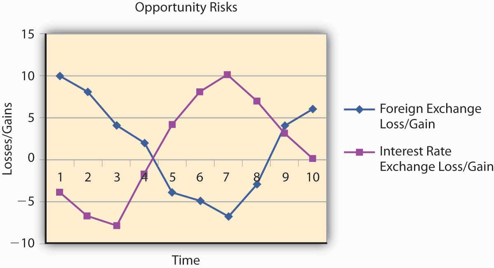
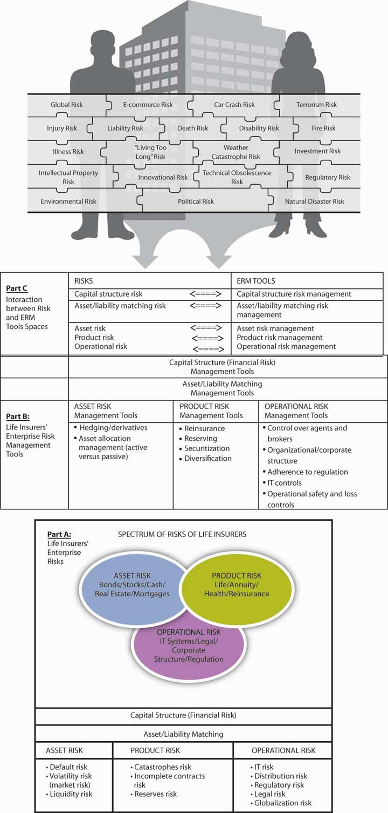

In the first three chapters, we provided information to help you understand and measure risks, as well as to evaluate risk attitudes and risk behavior. Chapter 4 "Evolving Risk Management: Fundamental Tools" concentrated on risk management and methods for identifying, measuring, and managing risks. In this chapter we elaborate further on the management of risk, placing greater emphasis on the opportunities that risk represents. We emphasize prudent opportunities rather than actions motivated by greed. When trying to identify the main causes of the 2008–2009 credit crisis, the lack of risk management and prudent behavior emerge as key factors. However, even companies that were not part of the debacle are paying the price, as the whole economy suffers a lack of credit and consumers’ entrenchment. Consumers are less inclined to buy something that they don’t consider a necessity. As such, even firms with prudent and well-organized risk management are currently seeing huge devaluation of their stocks.See explanation at http://www.Wikiperdia.org. see also “Executive Suite: Textron CEO Zeroes in on Six Sigma,” USA Today, updated January 28, 2008.
In many corporations, the head of the ERM effort is the chief risk officer or CRO. In other cases, the whole executive team handles the risk management decision with specific coordinators. Many large corporations adopted a system called Six Sigma, which is a business strategy widely adopted by many corporations to improve processes and efficiency. Within this model of operation they embedded enterprise risk management. The ERM function at Textron follows the latter model. Textron’s stock fell from $72 in January 2008 to $15 in December 2008. Let’s recall that ERM includes every aspect of risks within the corporation, including labor negotiation risks, innovation risks, lack-of-foresight risks, ignoring market condition risks, managing self-interest and greed risks, and so forth. Take the case of the three U.S. auto manufacturers—GM, Chrysler, and Ford. Their holistic risks include not only insuring buildings and automobiles or worker’s compensation. They must look at the complete picture of how to ensure survival in a competitive and technologically innovative world. The following is a brief examination of the risk factors that contributed to the near-bankrupt condition of the U.S. automakers: Paul Ingrassia, “How Detroit Drove into a Ditch: The Financial Crisis Has Brought the U.S. Auto Industry to a Breaking Point, but the Trouble Began Long Ago,” Wall Street Journal, October 25, 2008.
Had risk management been a top priority for the automobile companies, perhaps they would face a different attitude as they approach U.S. taxpayers for their bailouts. ERM needs to be part of the mind-set of every company stakeholder. When one arm of the company is pulling for its own gains without consideration of the total value it delivers to stakeholders, the result, no doubt, will be disastrous. The players need to dance together under the paradigm that every action might have the potential to lead to catastrophic results. The risk of each action needs to be clear, and assuredness for risk mitigation is a must.
This chapter includes the following:
While Chapter 4 "Evolving Risk Management: Fundamental Tools" enumerated all risks, we emphasized the loss part more acutely, since avoiding losses represents the essence of risk management. But, with the advent of ERM, the risks that represent opportunities for gain are clearly just as important. The question is always “How do we evaluate activities in terms of losses and gains within the firm’s main goal of value maximization?” Therefore, we are going to look at maps that examine both sides—both gains and losses as they appear in Figure 5.1 "The Links to ERM with Opportunities and Risks". We operate on the negative and positive sides of the ERM map and we look into opportunity risks. We expand our puzzle to incorporate the firm’s goals. We introduce more sophisticated tools to ensure that you are equipped to work with all elements of risk management for firms to sustain themselves.
Figure 5.1 The Links to ERM with Opportunities and Risks
Let us emphasize that, in light of the financial crisis of 2008–2009, ERM is a needed mind-set for all disciplines. The tools are just what ERM-oriented managers can pull out of their tool kits. For example, we provide an example for the life insurance industry as a key to understanding the links. We provide a more complete picture of ERM in Figure 5.2 "Links between the Holistic Risk Picture and Conventional Risk and ERM Tools".
Figure 5.2 Links between the Holistic Risk Picture and Conventional Risk and ERM Tools
Part C illustrates the interaction between parts A and B.
Source: Etti G. Baranoff and Thomas W. Sager, “Integrated Risk Management in Life Insurance Companies,” a $10,000 award-winning paper, International Insurance Society Seminar, Chicago, July 2006 and in special edition of the Geneva Papers on Risk and Insurance Issues and Practice.
As you saw in Chapter 4 "Evolving Risk Management: Fundamental Tools", risk management functions represent an integrated function within the organization. In Figure 4.2 "Notable Notions Risk Map", we map every risk. While the enterprise risk management (ERM) function compiles the information, every function should identify risks and examine risk management tools. Finance departments may take the lead, but engineering, legal, product development, and asset management teams also have input. The individual concerned with the organization’s ERM strategy is often given the position chief risk officer (CRO)Part of the executive team responsible for all risk elements in the organization.. The CRO is usually part of the corporation’s executive team and is responsible for all risk elements—pure and opportunity risks.
In this section, we illustrate in simple terms how the function integrates well into the firm’s goal to maximize value. In terms of publicly traded corporations, maximizing value translates to maximizing the company’s stock value. Even nonpublicly traded firms share the same goal. With nonpublicly traded firms, the market isn’t available to explicitly recognize the company’s true value. Therefore, people may interpret the term “firm’s value” differently with public versus nonpublic companies. Instead of the simple stock value, nonpublic firms may well create value using inputs such as revenues, costs, or sources of financing (debt of equity). While “cash-rich” companies have greater value, they may not optimally use their money to invest in growth and future income. External variables, such as the 2008–2009 credit crisis, may well affect firm value, as can the weather, investors’ attitudes, and the like. In 2008 and 2009, even strong companies felt the effects from the credit crisis. Textron and other well-run companies saw their values plummet.
The inputs for a model that determines value allow us to examine how each input functions in the context of all the other variables.See references to Capital versus Risks studies such as Etti G. Baranoff and Thomas W. Sager, “The Impact of Mortgage-backed Securities on Capital Requirements of Life Insurers in the Financial Crisis of 2007–2008,” Geneva Papers on Risk and Insurance Issues and Practice, The International Association for the Study of Insurance Economics 1018–5895/08, http://www.palgrave-journals.com/gpp; Etti G. Baranoff, Tom W. Sager, and Savas Papadopoulos, “Capital and Risk Revisited: A Structural Equation Model Approach for Life Insurers,” Journal of Risk and Insurance, 74, no. 3 (2007): 653–81; Etti G. Baranoff and Thomas W. Sager, “The Interrelationship among Organizational and Distribution Forms and Capital and Asset Risk Structures in the Life Insurance Industry,” Journal of Risk and Insurance 70, no. 3 (2003): 375; Etti G. Baranoff and Thomas W. Sager, “The Relationship between Asset Risk, Product Risk, and Capital in the Life Insurance Industry,” Journal of Banking and Finance 26, no. 6 (2002): 1181–97. Once we get an appropriate model, we can determine firms’ values and use these values to reach rational decisions. Traditionally, the drive for the firm to maximize value referred to the drive to maximize stockholders’ wealthValue of equity held by the owners of a company plus income in the form of dividends.. In other words, the literature referred to the maximization of the value of the firm’s shares (its market valueFor a public firm, the price of the stock times the number of shares traded., or the price of the stock times the number of shares traded, for a publicly traded firm). This approach replaces the traditional concept of profits maximization, or expected profit maximization, enabling us to introduce risky elements and statistical models into the decision-making process. We just have to decipher the particular model by which we wish to calculate the firm’s value and to enumerate the many factors (including risk variables from the enterprise risk map) that may affect firm value. Actual market value should reflect all these elements and includes all the information available to the market. This is the efficient-markets hypothesis.
Recently, many developed countries have seen a tendency to change the rules of corporate governance. Traditionally, many people believed that a firm should serve only its shareholders. However, most people now believe that firms must satisfy the needs of all the stakeholders—including employees and their families, the public at large, customers, creditors, the government, and others. A company is a “good citizen” if it contributes to improving its communities and the environment. In some countries, corporate laws have changed to include these goals. This newer definition of corporate goals and values translates into a modified valuation formula/model that shows the firm responding to stakeholders’ needs as well as shareholder profits. These newly considered values are the hidden “good will” values that are necessary in a company’s risk management. We assume that a firm’s market value reflects the combined impact of all parameters and the considerations of all other stakeholders (employees, customers, creditors, etc.) A firm’s brand equityThe value created by a company with a good reputation and good products. entails the value created by a company with a good reputation and good products. You may also hear the term a company’s “franchise value,” which is an alternative term for the same thing. It reflects positive corporate responsibility image.
Another significant change in a way that firms are valued is the special attention that many are giving to general environmental considerations. A case in point is the issue of fuel and energy. In the summer of 2008, the cost of gas rising to over $150 a barrel and consumers paying more than $4 at the pump for a gallon of gas, alternatives have emerged globally. At the time of writing this textbook, the cost of gas had dropped significantly to as low as $1.50 per gallon at the pump, but the memory of the high prices, along with the major financial crisis, is a major incentive to production of alternative energy sources such as wind and sun. Fuel cost contributed in large part to the trouble that the U.S. automakers faced in December because they had continued to produce large gas-guzzlers such as sport-utility vehicles (SUVs) with minimal production of alternative gas-efficient cars like the Toyota Prius and Yaris, the Ford Fusion hybrid, and the Chevrolet Avio. With the U.S. government bailout of the U.S. automobile industry in December 2008 came a string of demands to modernize and to innovate with electric cars. Further, the government made it clear that Detroit must produce competitive products already offered by the other large automakers such as Toyota and Honda (which offered both its Accord and its Civic in hybrid form).See references to Capital versus Risks studies such as Etti G. Baranoff and Thomas W. Sager, “The Impact of Mortgage-backed Securities on Capital Requirements of Life Insurers in the Financial Crisis of 2007–2008,” Geneva Papers on Risk and Insurance Issues and Practice, The International Association for the Study of Insurance Economics 1018–5895/08, http://www.palgrave-journals.com/gpp; Etti G. Baranoff, Tom W. Sager, and Savas Papadopoulos, “Capital and Risk Revisited: A Structural Equation Model Approach for Life Insurers,” Journal of Risk and Insurance, 74, no. 3 (2007): 653–81; Etti G. Baranoff and Thomas W. Sager, “The Interrelationship among Organizational and Distribution Forms and Capital and Asset Risk Structures in the Life Insurance Industry,” Journal of Risk and Insurance 70, no. 3 (2003): 375; Etti G. Baranoff and Thomas W. Sager, “The Relationship between Asset Risk, Product Risk, and Capital in the Life Insurance Industry,” Journal of Banking and Finance 26, no. 6 (2002): 1181–97. Chevrolet will offer a plug-in car called the Volt in the spring of 2010 with a range of more than 80 mpg on a single charge. Chrysler and Ford plan to follow with their own hybrids by 2012.
World population growth and fast growth among emerging economies have led us to believer that our environment has suffered immense and irrevocable damage.See environmental issues at http://environment.about.com/b/2009/01/20/obama-launches-new-white-house-web-site-environment-near-the-top-of-his-agenda .htm, http://environment.about.com/b/2009/01/12/billions-of-people-face-food-shortages-due-to-global-warming.htm, or http://environment.about.com/b/2009/01/20/obamas-first-100-days-an-environmental-agenda-for-obamas-first-100-days.htm. Its resources have been depleted; its atmosphere, land, and water quickly polluted; and its water, forests, and energy sources destroyed. The 2005 United Nations Millennium Ecosystem report from 2005 provides a glimpse into our ecosystem’s fast destruction. From a risk management point of view, these risks can destroy our universe, so their management is essential to sustainabilityThe capacity to maintain a certain process or state.. Sustainability, in a broad sense, is the capacity to maintain a certain process or state. It is now most frequently used in connection with biological and human systems. In an ecological context, sustainability can be defined as the ability of an ecosystem to maintain ecological processes and functions.http://en.wikipedia.org/wiki/Sustainability. Some risk management textbooks regard the risk management for sustainability as the first priority, since doing business is irrelevant if we are destroying our planet and undoing all the man-made achievements.
To reflect these considerations in practical decision making, we have to further adjust the definition and measurement of business goals. To be sensible, the firm must add a long-term perspective to its goals to include sustainable value maximization.
In this section we demonstrate how the concept of a firm maximizing its value can guide risk managers’ decisions. For simplicity’s sake, we provide an example. Assume that we base firm valuation on its forecasted future annual cash flow. Assume further that the annual cash flow stays roughly at the same level over time. We know that the annual cash flows are subject to fluctuations due to uncertainties and technological innovations, changing demand, and so forth.Capital budgeting is a major topic in financial management. The present value of a stream of projected income is compared to the initial outlay in order to make the decision whether to undertake the project. We discuss Net Present Value (NPV) in Chapter 4 "Evolving Risk Management: Fundamental Tools" for the decision to adopt safety belts. For more methods, the student is invited to examine financial management textbooks. In order to explain the inclusion of risk management in the process, we use the following income statement example:This example follows Doherty’s 1985 Corporate Risk Management.
Table 5.1 Example of an Income Statement Before Risk Management
| Income | $1,000 |
|---|---|
| Salaries | $800 |
| Interest | $100 |
| Total expenses | ($900) |
| Profit | $100 |
We assume that the value of the firm is ten times the value of the profit,This assumes an interest rate for the cash flow of 10 percent. The value of the firm is the value of the perpetuity at 10 percent which yields a factor of ten. or $1,000 in this very simple example (10 × $100).This concept follows the net income (NI) approach, which was shown to have many drawbacks relative to the Net Operating Income (NOI) approach. See the famous Miller-Modigliani theorems in the financial literature of 1950 and 1960. Now, assume that the firm considers a new risk management policy in which $40 will be spent to improve safety (or insurance premiums). If all other factors are held constant, then the firm’s profits will decrease, and the firm’s value will also decrease. In other words, in the simplistic model of certainty, any additional expense would reduce the firm’s value and managers would, therefore, regard the situation as undesirable. It seems that in general, almost all risk management activities would be undesirable, since they reduce the hypothetical firm’s value. However, this analysis ignores some effects and, therefore, leads to incorrect conclusions. In reality, the risk manager takes an action that may improve the state of the firm in many directions. Recall our demonstration of the safety belts example that we introduced Chapter 4 "Evolving Risk Management: Fundamental Tools". Customers may increase their purchases from this firm, based on their desire to trade with a more secure company, as its chances of surviving sudden difficulties improve. Many also believe that, as the firm gains relief from its fears of risks, the company can improve long-term and continuous service. Employees would feel better working for a more secure company and could be willing to settle for lower salaries. In addition, bondholders (creditors) will profit from increased security measures and thus would demand lower interest rates on the loans they provide (this is the main effect of a high credit rating). Thus, risk management activity may affect a variety of parameters and change the expected profit (or cash flow) in a more complex way. We present the state of this hypothetical firm as follows:
Table 5.2 Example of an Income Statement after Risk Management
| Before Change | After Change | ||
|---|---|---|---|
| Revenue | $1,000 | 1020 | Customers satisfied with increased security increase purchases |
| Insurance expenses | 0 | 40 | |
| Salaries | 800 | 760 | Employees satisfied with less |
| Interest on bonds | 100 | 95 | Creditors appreciate the improved security |
| Expected reported profit | 100 | 125 |
The profit (or expected profit) of the company has risen. If the owners continue to demand a tenfold multiplication factor, then the firm’s value increases from $1,000 to $1,250. The increase is a direct result of the new risk management policy, despite the introduction of the additional risk management or insurance costs. Note that the firm’s value has increased because other stakeholders (besides the owners) have enjoyed a change of attitude toward the firm. The main stakeholders affected include the credit suppliers in the capital market, the labor market and the product customers’ market. This did not happen as a result of improving the security of the stockholders but as a result of other parties benefiting from the firm’s new policy.
In fact, the situation could be even more interesting, if, in addition, the owners would be interested in a more secure firm and would be willing to settle for a higher multiplier (which translates into lower rate of return to the owners).This happens if the corporate cost of capital decreases to about 9 percent from 10 percent. For example, if the new multiplier is eleven, the value of the firm would go up to $1,375 (125 × 11), relative to the original value of $1,000, which was based on a multiplier of ten.
This oversimplified example sheds a light on the practical complexity of measuring the risk manager’s performance, according to the modern approach. Top managers couldn’t evaluate the risk manager’s performance without taking into account all the interactions between all the parties involved. In reality, a precise analysis of this type is complicated, and risk managers would have a hard time estimating if their policies are the correct ones. Let us stress that this analysis is extremely difficult if we use only standard accounting tools, which are not sensitive enough to the possible interactions (e.g., standard accounting does not measure the fine changes that take place—such as the incremental effect of the new risk management policy on the sales, the salaries, or the creditors’ satisfaction). We described this innovative approach in hope that the student will understand the nature of the problem and perhaps develop accounting tools that will present them with practical value.
Risk managers may not always clearly define their goals, because the firm’s goals are not always clearly defined, especially for nonprofit organizations. Executives’ complex personal considerations, management coalitions, company procedures, past decisions, hopes, and expectations enter into the mix of parameters defining the firm’s goals. These types of considerations can encourage risk managers to take conservative action. For example, risk managers may buy too much insurance for risks that the firm could reasonably retain. This could result from holding the risk manager personally responsible for uninsured losses. Thus, it’s very important not to create a conflict between the risk managers’ interests and the firm’s interests. For example, the very people charged with monitoring mortgage issuance risk, the mortgage underwriters and mortgage bankers, had a financial incentive (commissions) to issue the loans regardless of the intrinsic risks. The resulting subprime mortgage crisis ensued because of the conflict of interest between mortgage underwriters and mortgage bankers. This situation created the starting point for the 2008–2009 financial crisis.
Risk managers must ascertain—before the damage occurs—that an arrangement will provide equilibrium between resources needed and existing resources. The idea is to secure continuity despite losses. As such, the risk manager’ job is to evaluate the firm’s ability or capacity to sustain (absorb) damages. This job requires in-depth knowledge of the firm’s financial resources, such as credit lines, assets, and insurance arrangements. With this information risk managers can compare alternative methods for handling the risks. We describe these alternative methods in the next section.
The enterprise risk manager or CRO must understand the risks inherent in both sides of the balance sheet of the firm’s financial statements. A balance sheetDocument that provides a snapshot of a firm’s assets and liabilities. provides a snapshot of a firm’s assets and liabilities. We show a balance sheet for a nonfinancial firm in Table 5.3 "Hypothetical Retail and Wholesaler Fashion Apparel Balance Sheet—(Risks and ERM)". Table 5.5 "A Hypothetical Balance Sheet of a Hypothetical Life Insurance Firm with Its Asset Allocation Mix (in Millions of Dollars)—Risks and ERM" then shows a balance sheet for an insurance company. Firms must produce annual financial reports including their balance sheets and income statements. Together, we call income statements and balance sheets financial statementsIncome statements and balance sheets.. While we focused in the section above on a simplified hypothetical income statement, now we focus on the assets and liabilities as they appear at a certain point. With this ammunition at hand, we will be able to explain why financial institutions created so many problems during the 2008–2009 credit crisis. You will be able to explain AIG’s major problems and why the government ended up bailing it out, along with many other financial institutions. The question that you will be able to answer is, “What side of the balance sheet did AIG fail to manage appropriately?”
First, we will work with a hypothetical, small, nonfinancial institution, such as a furniture manufacturer or high-tech hardware and software company. Table 5.3 "Hypothetical Retail and Wholesaler Fashion Apparel Balance Sheet—(Risks and ERM)" shows the hypothetical assets, liabilities, and equity of this business.
Table 5.3 Hypothetical Retail and Wholesaler Fashion Apparel Balance Sheet—(Risks and ERM)
| Assets | Liabilities and Owners’ Equity | |||
|---|---|---|---|---|
| Cash (loss of use risks) | $8,000 | Liabilities | ||
| Accounts Receivable (customers quality, foreign exchange and interest rate risks) | $28,000 | Notes Payable (cash flow, foreign exchange and interest rate risks) | $50,000 | |
| Accounts Payable and the mortgage on the building (real estate crisis, cash flow, and interest rate risks) | $90,000 | |||
| Buildings (asset risk) | $100,000 | Total liabilities | $140,000 | |
| Tools, furniture, inventory, and equipment (asset risk and opportunity asset risk in store design) | $27,000 | Owners’ equity | ||
| Capital Stock | $17,000 | |||
| Retained Earnings | $6,000 | |||
| Total owners’ equity | $23,000 | |||
| Total | $163,000 | Total | $163,000 | |
Based on Table 5.3 "Hypothetical Retail and Wholesaler Fashion Apparel Balance Sheet—(Risks and ERM)", we can list some areas for which enterprise risk managers (ERMs) need to involve themselves for risk mitigation. Note, these loss risks do not. As part of the executive team, enterprise risk managers regard all activities, including any involvement in opportunity risks that carry the potential of gains as discussed in Chapter 1 "The Nature of Risk: Losses and Opportunities".
Examples of ERM activities generated from the assets and the liabilities on the balance sheet are as follows:
Capital structure decisions as well as the nature of debt and its covenantsThe details of the contracts and promises between the debt contract parties. (the details of the contracts and promises between the debt contract parties), accounts receivables, and notes have been under the domain of the finance or treasury department of companies with a new breed of financial risk managersManagers responsible for managing the risk of the investments and assets of a firm.. These risk managers are responsible for managing the risk of the investments and assets of the firms using tools such as Value at Risk (VaR; discussed in Chapter 2 "Risk Measurement and Metrics") and capital markets instruments such as derivatives as explained in Chapter 2 "Risk Measurement and Metrics" and will be detailed in the next section of this chapter. Currently, the trend is to move financial risk management into the firm-wide enterprise risk management.
Next, we move to the risk management function with regard to the balance sheet of financial institutions. We delve into an example of a hypothetical life insurance company. As you will see in the coming chapters, insurance companies are in two businesses: the insurance and investment businesses. The insurance side is the underwriting and reserving liabilities. UnderwritingThe process of evaluating risks, selecting which risks to accept, and identifying potential adverse selection. is the process of evaluating risks, selecting which risks to accept, and identifying potential adverse selection. Reserving liabilitiesCalculating the amount that the insurer needs to set aside to pay future claims. involves the calculation of the amount that the insurer needs to set aside to pay future claims. It’s equivalent to the debt of a nonfinancial firm. The investment side includes decisions about asset allocationThe mix of assets held by an insurer. to achieve the best rate of return on the assets entrusted to the insurer by the policyholders seeking the security. Asset allocation is the mix of assets held by an insurer; also, the allocation of assets is necessary to meet the timing of the claims obligations. This activity is called asset-liabilities matchingAllocation of an insurer’s assets to meet claims obligations as they become due.. The matching is, in essence, to ensure liquidityDegree to which assets can be used to meet a firm’s obligations (the more liquid an asset, the easier it can be used to meet obligations). so that when claims come due the firm has available cash to pay for losses.
When reviewing the asset portfolioDetails the assets that are to be matched to liabilities in the asset-liabilities matching process., also referred to as the investment portfolioDetails the assets that are to be matched to liabilities in the asset-liabilities matching process.. or asset allocationThe mix of assets held by an insurer. of an insurer, we see the characteristics of the assets needed to support the payment of claims of the specific insurer. Asset allocation is the mix of assets held by an insurer. A property or health insurer needs a quick movement of funds and cannot invest in many long-term investments. On the other hand, insurers that sell mostly life insurance or liability coverage know that the funds will remain for longer-term investment, as claims may not arrive until years into the future.
The firm maintains liability accountsReserves held on balance sheets to cover future claims and other obligations, such as taxes and premium reserves. in the form of reserves on balance sheets to cover future claims and other obligations such as taxes and premium reserves. The firm must maintain assets to cover the reserves and still leave the insurer with an adequate net worth in the form of capital and surplusThe equivalent of equity on the balance sheet of any firm—the net worth of the firm, or assets minus liabilities.. Capital and surplus represent equity on the balance sheet of a nonfinancial firm. We calculate the firm’s net worth by taking the asset minus liabilities. For students who have taken a basic accounting course, the balance sheet of a firm will be very familiar. Table 5.4 "Balance Sheet Structure of an Insurer" provides the two sides of the balance sheet of an insurer in insurance terminology.
Table 5.4 Balance Sheet Structure of an Insurer
| Assets | Liabilities |
|---|---|
| Portfolio of invested assets | Liabilities including reserves |
| Premiums, reinsurance, and other assets | Capital and surplus |
The following is Table 5.5 "A Hypothetical Balance Sheet of a Hypothetical Life Insurance Firm with Its Asset Allocation Mix (in Millions of Dollars)—Risks and ERM", which shows the investment portfolio or the asset allocation of a hypothetical life insurer within its balance sheet. The asset mix reflects the industry’s asset distribution. Table 5.5 "A Hypothetical Balance Sheet of a Hypothetical Life Insurance Firm with Its Asset Allocation Mix (in Millions of Dollars)—Risks and ERM" also shows the liabilities side of that insurer.
Table 5.5 A Hypothetical Balance Sheet of a Hypothetical Life Insurance Firm with Its Asset Allocation Mix (in Millions of Dollars)—Risks and ERM
| Assets | Liabilities and Capital and Surplus | ||
|---|---|---|---|
| Bonds: risks of junk bonds and nonperforming, mortgage-backed securities. | $1,800 | Loans and advances | $10 |
| Stocks: risks of the market fluctuations | 990 | Life insurance and annuities reserves [risk of catastrophes and miscalculations by actuaries (longevity risk) and lack of underwriting | 950 |
| Mortgages: risk of nonperforming mortgages, no liquidity | 260 | Pension fund reserves: risk of inability to keep the promises of the guarantees | 1,200 |
| Real Estate: risks of real estate collapse and lack of liquidity | 50 | Taxes payable | 25 |
| Policy Loans: risk of inability of policyholders to pay | 110 | Miscellaneous liabilities | 650 |
| Miscellaneous | 120 | Total Liabilities | 2,835 |
| Capital and Surplus | $495 | ||
| Total | 3,330 | Total | $3,330 |
The hypothetical life insurer in Table 5.5 "A Hypothetical Balance Sheet of a Hypothetical Life Insurance Firm with Its Asset Allocation Mix (in Millions of Dollars)—Risks and ERM" represents a typical insurer in the United States with a larger percentage of investment in bonds and mortgages and less investment in stocks. The ERM joins the executive team and regards all activities, including firm undertakings in opportunity and financial risks. Therefore, the risk manager works also as a financial risk manager on the side of the insurer’s asset allocation and capital structure questions. Examples of ERM activities generated from the assets and liabilities on the balance sheet are as follows:
As an insurer, the firm faces an outcome to the ERM function, since underwriting is a critical component for the insurer’s sustainability. Here, the balance sheet would show that the insurer invested in mortgage-backed securities (MBS), not doing its underwriting work itself. The insurers allowed the investment professionals to invest in financial instruments that did not underwrite the mortgage holders prudently. If the CRO was in charge completely, he would have known how to apply the expertise of the liabilities side into the expertise of the assets side and would have demanded clear due diligence into the nature of MBS. Warren Buffet, the owner of insurance companies, said he did not trust MBS and did not invest in such instruments in his successful and thriving businesses. Due diligenceThe process of examining every action and items in the financial statement of companies to ensure the data reflect true value. examines every action and items in the financial statement of companies to ensure the data reflect true value.
In this section you learned the following:
Enterprise risk management has emerged from the following steps of maturation:
These mechanisms combine to create a direct connection between the firm’s overall appetite for risk, as set in company objectives, and choosing appropriate corporate-level for solutions in mitigating risks.
The last two or three decades have been a period of rapid financial innovation. Capital markets soared and with the growth came the development of derivatives. DerivativesFinancial securities whose value is derived from another underlying asset. can be defined as financial securities whose value is derived from another underlying asset. Our discussion will incorporate three basic tools used: forwards/futures, swaps, and options. Derivatives are noninsurance instruments used to hedge, or protect, against adverse movements in prices (in stocks or in commodities such as rice and wheat) or rates (such as interest rates or foreign exchange rates). For example, breakfast cereal manufacturer Frosty O’s must have wheat to produce its finished goods. As such, the firm is continually vulnerable to sudden increases in wheat prices. The company’s risk management objective would be to protect against wheat price fluctuations. Using derivatives, we will explore the different choices in how an enterprise risk manager might mitigate the unwanted price exposure.
Forwards and futures are similar in that they are agreements that obligate the owner of the instrument to buy or sell an asset for a specified price at a specified time in the future. ForwardsFinancial securities traded in the over-the-counter market whose characteristics can be tailored to meet specific customer needs. are traded in the over-the-counter market, and contract characteristics can be tailored to meet specific customer needs. Farmers and grain elevator operators also use forwards to lock in a price for their corn or soybeans or wheat. They may choose to lock in the basisThe amount of money above and beyond the futures price., which is the amount of money above and beyond the futures price. Alternatively, if they like (believe that the prices are at their highest likely levels) the futures’ price levels, they can lock in the entire price. Food and beverage companies use forwards to lock in their costs for grains and fruits and vegetables. Quaker Oats, for example, locks in the prices on corn and oats using forward contracts with growers. Anheuser Busch depends upon forwards to lock in the price of hops, rice, and other grains used to make beer. Dole fruit companies use forwards to price out pineapples, raspberries, grapes, and other fruits.
FuturesFinancial securities that trade on an exchange and that have standardized contract specifications., on the other hand, trade on an exchange with standardized contract specifications. Forwards and futures prices derive from the spot, or cash market, which is “today’s” price for a particular asset. An example of a spot contract would be your agreement to purchase a meal at a restaurant. The spot market is the quoted price on today’s menu. A futures or forwards market would be the price you would have to pay if you wanted the same meal one year from today. Getting back to our cereal manufacturer, Frosty O’s can either go to the spot market on an ongoing basis or use the forwards/futures market to contract to buy wheat in the future at an agreed-upon price. Buying in the spot market creates exposure to later price fluctuation. Buying in the forwards/futures market allows the manufacturer to guarantee future delivery of the wheat at a locked-in price. Hence, this strategy is known as a “lock it in” defense. Southwest Airlines’ strategy to buy oil futures during the fuel crisis of 2007–2008 allowed them to be the only profitable airline. On the other side, Continental Airline is suffering from buying aviation fuel futures when the price of oil subsequently declined dramatically. Thus, the use of futures and forwards can create value or losses, depending upon the timing of its implementation.
SwapsAgreements to exchange or transfer expected future variable-price purchases of a commodity or foreign exchange contract for a fixed contractual price today. are agreements to exchange or transfer expected future variable-price purchases of a commodity or foreign exchange contract for a fixed contractual price today. In effect, Frosty O’s buys wheat and swaps its expected “floating” price exposure for wheat at different times in the future for a fixed rate cost. For example, if Frosty O’s normally buys wheat on the first of each month, the company will have to pay whatever the spot price of wheat is on that day. Frosty O’s is exposed to market price fluctuations for each of the twelve months over a year’s time period. It can enter into a transaction to pay a fixed monthly rate over a year’s time period instead of whatever the floating spot rate may be each month. The net effect of the swap transaction is to receive the necessary wheat allotment each month while paying a fixed, predetermined rate. The swap rate quote would be fixed using the spot market and the one-year forward market for wheat. Thus Frosty O’s eliminates any adverse price exposure by switching the “floating” price exposure for an agreed-upon fixed price. Swaps are used in the same manner to exchange floating interest rate liabilities for fixed-interest rate liabilities. Hence, this strategy is known as a “switch out of it” defense. We will show an elaborate swaps example at the end of this section.
Agreements that give the right (but not the obligation) to buy or sell an underlying asset at a specified price at a specified time in the future are known as optionsAgreements that give the right (but not the obligation) to buy or sell an underlying asset at a specified price at a specified time in the future.. Frosty O’s can purchase an option to buy the wheat it needs for production at a given strike price. The strike price (also called exercise price) is the specified price set in the option contract. In this fashion, Frosty O’s can place a ceiling on the price it will pay for the needed wheat for production in future time periods. Until the maturity date of the option passes, option holders can exercise their rights to buy wheat at the strike price. If the future spot price of wheat rises above the strike price, Frosty O’s will execute its option to purchase the wheat at the lower strike price. If the future price of wheat falls below the strike price, the company will not exercise its option and will instead purchase wheat directly in the spot market. This differentiates the option contract from the futures contract. An option is the right to buy or sell, whereas a futures/forward contract is an obligation to buy of sell. The option buyer pays the cost of the option to buy wheat at the strike price—also known as the option premium. A call option grants the right to buy at the strike price. A put option grants the right to sell at the strike price. A call option acts like insurance to provide an upper limit on the cost of a commodity. A put option acts like insurance to protect a floor selling price for wheat. Hence, option strategies are known as “cap” and “floor” defenses.James T. Gleason, The New Management Imperative in Finance Risk (Princeton, NJ: Bloomberg Press, 2000), Chapter 4 "Evolving Risk Management: Fundamental Tools".
Individuals and companies alike use derivative instruments to hedge against their exposure to unpredictable loss due to price fluctuations. The increasing availability of different derivative products has armed enterprise risk managers (ERM) with new risk management tool solutions. An importer of raw materials can hedge against changes in the exchange rate of the U.S. dollar relative to foreign currencies. An energy company can hedge using weather derivatives to protect against adverse or extreme weather conditions. And a bank can hedge its portfolio against interest rate risk. All of these risk exposures interrupt corporate cash flow and affect earnings, capital, and the bottom line, which is the value of the firm. These solutions, however, create new risk exposures. Over-the-counter market-traded derivatives, which feature no exchange acting as counterparty to the trade, expose a company to credit risk in that the counter party to the contract may not live up to its side of the obligation.
Dramatic changes have taken place in the insurance industry in the past two to three decades. A succession of catastrophic losses has caused insurers and reinsurers to reevaluate their risk analyses. The reassessment effort was made in full realization that these disasters, as horrible as they were, may not be the last worst-case scenarios. Past fears of multiple noncorrelated catastrophic events occurring in a relatively short period of time are on the top of agendas of catastrophe risk modelers and all constituencies responsible for national disaster management. The affordability of coverage, along with reinsurers’ credit quality concerns players who have lost large chunks of capital and surplus or equity to those disasters led to the first foray into using the capital markets as a reinsurance alternative.Michael Himick et al., Securitized Insurance Risk: Strategic Opportunities for Insurers and Investors (Chicago: Glenlake Publishing Co., Ltd., 1998), 49–59.
Packaging and transferring the insurance risks to the capital markets through the issuance of a financial security is termed securitizationPackaging and transferring the insurance risks to the capital markets through the issuance of a financial security..David Na, “Risk Securitization 101, 2000, CAS Special Interest Seminar” (Bermuda: Deloitte & Touche), http://www.casact.org/coneduc/specsem/catastrophe/2000/handouts/na.ppt. The risks that have been underwritten are pooled together into a bundle, which is then considered an asset and the underwriter then sells its shares; hence, the risk is transferred from the insurers to the capital markets. Securitization made a significant difference in the way insurance risk is traded—by making it a commodity and taking it to the capital markets in addition to or instead of to the insurance/reinsurance market. Various insurance companies’ risks for similar exposures in diversified locations are combined in one package that is sold to investors (who may also include insurers). Securitized catastrophe instruments can help a firm or an individual to diversify risk exposures when reinsurance is limited or not available. Because global capital markets are so vast, they offer a promising means of funding protection for even the largest potential catastrophes. Capital market solutions also allow the industry (insurers and reinsurers) to reduce credit risk exposure, also known as counterparty riskRisk of loss from failure of a counterparty, or second party, in a derivatives contract to perform as agreed or contracted.. This is the risk of loss from failure of a counterparty, or second party, in a derivatives contract to perform as agreed or contracted. Capital market solutions also diversify funding sources by spreading the risk across a broad spectrum of capital market investors. Securitization instruments are also called insurance-linked securities (ISLs)General term for securitization instruments.. They include catastrophe bonds, catastrophe risk exchange swaps, insurance-related derivatives/options, catastrophe equity puts (Cat-E-Puts), contingent surplus notes, collateralized debt obligations (CDOs),A word of caution: AIG and its CDS without appropriate capitalization and reserves. The rating of credit rating agencies provided the security rather than true funds. Thus, when used inappropriately, the use of such instruments can take down giant corporations as is the case of AIG during the 2008 to 2009 crisis. and weather derivatives.
Catastrophe bondsBonds that seek to protect the insurance industry from catastrophic events., or CAT bonds, seek to protect the insurance industry from catastrophic events. The bonds pay interest and return principal to investors the way other debt securities do—as long as the issuer does not experience losses above an agreed-upon limit. Insurers can come to the capital market to issue bonds that are tied to a single peril, or even to a portfolio or basket of risks. Embedded in each issue is a risk trigger that, in the event of catastrophic loss, allows for forgiveness of interest and/or principal repayment.
Innovation is key to the success stories on Wall Street. In November 1996, Morgan Stanley & Co. was about to make history as the first to underwrite an insurance-related issue offered to the public: catastrophe bonds. California Earthquake Authority (CEA), a state agency providing homeowners insurance, needed capital and had sought Wall Street’s assistance. Morgan Stanley proposed a simple structure: bonds paying a robust 10 percent interest but with a catastrophic loss trigger point of $7 billion. If CEA lost that much (or more) from any one earthquake, the investors would lose their principal.
The deal didn’t happen because Berkshire Hathaway’s insurance division, National Indemnity Co., offered to underwrite CEA’s earthquake risk. Many speculate that Berkshire was intent on foiling investment banking firms’ attempt to steal away traditional reinsurance business. The market didn’t go away, however. By the time Katrina hit the Gulf Coast in 2005, the market had grown to an estimated $6 billion in value. The market kept growing since 1997 when $900 million worth of CAT bonds were sold. In June of that year, USAA, a San Antonio-based insurer, floated an issue of $477 million in the capital markets with a one-year maturity. The loss threshold was $1 billion. As long as a hurricane didn’t hit USAA for more than the $1 billion over the one-year time period, investors would enjoy a hefty coupon of 11 percent and would get their principal back.
Reinsurer industry executives agreed upon only one thing: CAT bonds would radically change their business. With ongoing property development in catastrophe-prone areas, the insurance industry’s exposure to huge losses is only increasing. S&P calculated that the probability of a $1 billion loss occurring in any given year is about 68 percent, while the probability of a $3 billion loss drops to about 31 percent. The chance of a $15 billion loss in a given year is about 4 percent. For example, Hurricane Ike produced losses of about $23 billion in 2008.
CAT bonds have been hailed for the following reasons: they add capacity to the market, fill in coverage gaps, and give risk managers leverage when negotiating with insurers by creating a competitive alternative. As the insurance industry cycles, and the next wave of disasters depletes reinsurance companies’ capital and surplus, Wall Street will be poised to take advantage. During soft markets, CAT bonds are more expensive than traditional reinsurance. If reinsurance markets begin to harden, CAT bond issues are a practical alternative. However, some downside potential threaten. What happens when you have a loss, and the bonds are used to pay for the exposure? Andrew Beazley, active underwriter of Beazley Syndicate 623 in London, said, “Once you have a loss, the bonds will pay, but you still have the exposure. The question is whether you’ll be able to float another bond issue to cover it the next time something happens. Reinsurers are expected to stick around and still write coverage after a loss, but can the same be said with CAT bond investors?” Apparently, the answer is “yes,” as evidenced from the substantial growth of this risk capital from an estimated $4.04 billion in 2004 to approximately $6 billion in 2005. The biggest fear of the CAT bonds owners in the aftermath of Katrina did not materialize. The insured losses from Katrina did not exceed the agreed level.
Sources: Andrew Osterland, “The CATs Are out of the Bag,” BusinessWeek, January 26, 1998; Douglas McLeod, “Cat Bonds to Grow: Increasing Frequency of Losses Will Contribute: S&P,” Business Insurance, July 12 1999, 2; Mike Hanley, “Cat Bond Market Almost There,” International Risk Management, 8, no. 1 (2001); Sam Friedman, “There’s More than One Way to Skin a Cat,” National Underwriter, Property & Casualty/Risk & Benefits Management Edition, May 8, 2000; Mark E. Ruquet “CAT Bonds Grew 17 Percent In ‘04” National Underwriter Online News Service, April 1, 2005; Richard Beales and Jennifer Hughes, “Katrina Misses Cat Bond Holders,” Financial Times, August 31, 2005 at http://news.ft.com/cms/s/59e21066-1a66-11da-b7f5-00000e2511c8.html.
An example of a CAT bond is the issue by Oriental Land Company Ltd., owner and operator of Tokyo Disneyland. Oriental Land used CAT bonds to finance one facility providing earthquake coverage and the other to provide standby financing to continue a $4 billion expansion of the theme park. Each facility raised $100 million via the bond market to cover property risk exposure and subsequent indirect business interruption loss in case of catastrophic loss from an earthquake. The trigger event was for an earthquake, regardless of whether the event caused any direct physical damage to the park.Sam Friedman, “There’s More Than One Way to Skin a Cat,” National Underwriter, Property & Casualty/Risk & Benefits, May 8, 2000. For more about how CAT bonds provide protection, see “The CAT Bond Story” in this chapter.
With catastrophe equity puts (Cat-E-Puts)Financial instrument that gives an insurer the option to sell equity (e.g., preferred shares) at predetermined prices, contingent upon the catastrophic event., the insurer has the option to sell equity (e.g., preferred shares) at predetermined prices, contingent upon the catastrophic event. Contingent surplus notesOptions to borrow money in case of a specific event. are options to borrow money in case of a specific event. Collateralized debt obligations (CDOs)Securities backed by a pool of diversified assets. are securities backed by a pool of diversified assets; these are referred to as collateralized bond obligations (CBOs) when the underlying assets are bonds and as collateralized loan obligations (CLOs) when the underlying assets are bank loans.Definition from Frank J. Fabozzi and Laurie S. Goodman, eds., Investing in Collateralized Debt Obligations (Wiley, 2001). Weather derivativesDerivative contracts that pay based on weather-related events. are derivative contracts that pay based on weather-related events. All are examples of financial market instruments that have been used to transfer risk and to provide risk-financing vehicles.A comprehensive report by Guy Carpenter appears in “The Evolving Market for Catastrophic Event Risk,” August 1998, http://www.guycarp.com/publications/white/evolving/evolv24.html.
Investors’ advantages in insurance-linked securities are diversification, as these instruments allow noninsurance investors to participate in insurance-related transactions and above-average rates of return. Advantages to the issuers of such instruments include greater capacity and access to the capital markets. Insurance-linked securities provide issuers with more flexibility and less reliance on reinsurers. The presence of new instruments stabilizes reinsurance pricing and provides higher levels of risk transfer with cutting-edge understanding for both insurance and capital markets.
We have shown that enterprise risk management (ERM) for a corporation is indeed complex. Full enterprise-wide risk management entails folding financial risk management into the CRO’s department responsibilities. A chief risk officer’s role is multifaceted. Today, risk managers develop goals to widen the understanding of risk management so that employees take into account risk considerations in their day-to-day operations. Risk awareness has become imperative to the overall health of the organization. Sound practices must incorporate the advancements on the technology front so that companies can compete in the global environment. Viewing all integrated segments of risk from across the enterprise in a holistic manner facilitates a global competitive advantage.
John Allen is the CEO of Hometown Bank.Written by Denise Togger, printed with permission of the author. Denise Williams Togger earned her Bachelor of Science degree in economics in 1991 and her Master of Science in finance in 2002 from Virginia Commonwealth University. In fulfilling the MS degree requirements, she completed an independent study in finance focusing on enterprise risk management tools. Text and case material presented draws from curriculum, research, and her eighteen years experience in the investment securities industry. Most recently Denise served as a member of the risk management committee of BB&T Capital Markets as senior vice president and fixed-income preferred trader. BB&T Capital Markets is the capital markets division of BB&T Corporation, the nation’s fourteenth largest financial holding company. It was featured as part of Case 4 in the original “Risk Management and Insurance” Textbook by Etti Baranoff, 2003, Wiley and Sons. Mr. Allen is addressing company-wide, long-range plans to incorporate risk management techniques to maximize his bank’s financial performance and shareholder value.
Important note: This hypothetical case reflects a bank’s activities in the early 2000s. It does not deal with the 2008–2009 credit crisis and it ramifications on many banks and the financial institutions globally.
In the early years of U.S. banking history, banks seemed to have the easiest job in the corporate world. All a bank manager had to do was receive deposits in the form of checking, savings, and deposit accounts (bank liabilities), and provide mortgage and other lending services (bank assets). Throughout the twentieth century, the banking industry prospered. For most of the post–World War II era the upward-sloping yield curve meant that interest rates on traditional thirty-year residential mortgage loans exceeded rates on shorter-term savings and time deposits.Anthony Saunders, Chapter 1 "The Nature of Risk: Losses and Opportunities" Financial Institutions Management: A Modern Perspective, 3rd ed. (New York: McGraw-Hill Higher Education, 2000), ch. 1. The positive net margin between the two rates accounted for banks’ prosperity. All of this ended abruptly when the Federal Reserve changed its monetary policy in October 1979 to one of targeting bank reserves instead of interest rates. Figure 5.3 "Thirty-Year Treasury Rates—Secondary Market" and Figure 5.4 "Three-Month Treasury Bills Rates—Secondary Market" provide a historical perspective of interest rates.
Figure 5.3 Thirty-Year Treasury Rates—Secondary Market

Source: http://www.Economagic.com. Economagic includes the original data source: U.S. Government, Federal Reserve Board of Governors historical monthly interest rate series.
Figure 5.4 Three-Month Treasury Bills Rates—Secondary Market

Source: http://www.Economagic.com. Economagic includes the original data source: U.S. Government, Federal Reserve Board of Governors historical monthly interest rate series.
Figure 5.3 "Thirty-Year Treasury Rates—Secondary Market" and Figure 5.4 "Three-Month Treasury Bills Rates—Secondary Market" graphically present interest rate risk exposure that banks face. The noticeable change is the absolute pickup in interest rate volatility from 1979 forward. As Figure 5.4 "Three-Month Treasury Bills Rates—Secondary Market" shows, three-month T-bill interest rates reached above 16 percent in the early 1980s. Yet many banks’ assets were locked into low-interest, long-term loans, mostly thirty-year mortgages. The financial crisis that followed the rapid rise in interest rates (on both short- and long-term liabilities) was catastrophic in proportion; many banks failed by positioning their loan portfolios incorrectly for the change in interest rates. Locked-in long-term mortgage loan rates provided insufficient cash inflows to meet the higher cash outflows required on deposits. Those that survived had to make major changes in their risk management style. Later we will introduce how a specific bank, Hometown Bank, manages its interest rate exposure using derivatives.
“Modern banks employ credit-scoring techniques to ensure that they are making good lending decisions, use analytical models to monitor the performance of their loan portfolios, and implement financial instruments to transfer out those credit risks with which they are not comfortable.”Sumit Paul-Choudhury, “Real Options,” Risk Management Magazine, September 2001, 38. Bankers learned a costly lesson in the 1980s by not being adequately prepared for a changing interest rate environment. Risk management must be enterprise-wide and inclusive of all components of risk. Hometown Bank is a surviving bank, with lofty goals for the future. The current focus for CEO John Allen has three components:
Review the primary elements of Hometown’s financial risks:
Hometown Bancorp was formed in 1985 as a financial holding company headquartered in Richmond, Virginia. Its only subsidiary is Hometown Bank, which was chartered in 1950 with the opening of its first branch in downtown Richmond. Hometown has experienced a steady growth of core assets: deposits, money market instruments, and marketable security investments. Table 5.6 "Hometown Bancorp Investment Policy, December 31, 2001" shows Hometown’s investment policy and lists allowable securities for their investment securities account.
Table 5.6 Hometown Bancorp Investment Policy, December 31, 2001
|
The securities portfolio is managed by the president and treasurer of the bank. Investment management is handled in accordance with the investment policy, which the board of directors approves annually. To assist in the management process, each investment security shall be classified as “held-for-maturity” or “available-for-sale.” The investment policy covers investment strategies, approved securities dealers, and authorized investments. The following securities have been approved as investments:
All securities must be investment grade quality and carry a minimum rating of no less than single-A by Moody’s or Standard & Poor’s. |
Asset growth has occurred both internally and externally with the acquisition of community banks and branches in Hometown’s market. Market domain expanded to include the capital region (the city of Richmond and surrounding counties), the Tidewater region, the Shenandoah Valley region, and the northern Virginia markets. In March 2002, Hometown Bank opened its twenty-fifth branch, in Virginia Beach, Virginia. With total assets of approximately $785 million (as of December 2001), Hometown ranks as the eighth largest commercial bank in the state of Virginia. The network of branches offers a wide range of lending and deposit services to business, government, and consumer clients. The use of these deposits funds both the loan and investment portfolio of the bank. Principal sources of revenue are interest and fees on loans and investments and maintenance fees for servicing deposit accounts. Principal expenses include interest paid on deposits and other borrowings and operating expenses. Corporate goals include achieving superior performance and profitability, gaining strategic market share, and providing superior client service. Hometown has achieved its fifth consecutive year of record earnings. Table 5.7 "Hometown Bancorp and Subsidiaries Financial Statements (in Thousands)" shows Hometown’s consolidated financial statements from 1999 to 2001.
Table 5.7 Hometown Bancorp and Subsidiaries Financial Statements (in Thousands)
| 2001 | 2000 | 1999 | |
|---|---|---|---|
| Consolidated Balance Sheet | |||
| Interest-earning assets | |||
| Money market investments | $62,800 | $49,600 | $39,100 |
| Investment securities | 65,500 | 51,700 | 40,800 |
| Loans | 649,300 | 513,000 | 405,000 |
| Allowance for loan losses | (11,300) | (7,600) | (6,000) |
| Premises, furniture, & equipment | 14,900 | 11,700 | 10,000 |
| Other real estate | 3,800 | 3,000 | 2,500 |
| Total assets | $785,000 | $621,400 | $491,400 |
| Interest-bearing liabilities | |||
| Deposits | $467,500 | $369,300 | $292,000 |
| Other short-term borrowings | 123,000 | 97,000 | 76,700 |
| non-interest borrowings | 117,000 | 92,400 | 73,000 |
| Long-term debt | 12,900 | 10,000 | 8,200 |
| Total liabilities | $720,400 | $568,700 | $449,900 |
| Shareholders’ equity | 64,600 | $52,700 | 41,500 |
| Total liabilities and shareholders equity | $785,000 | $621,400 | $491,400 |
| Consolidated Income Statement | |||
| Interest income | $55,000 | $44,000 | $34,700 |
| Interest expense | (27,500) | (21,100) | (18,300) |
| Net interest income | $27,500 | $22,900 | $16,400 |
| Provision for loan losses | (4,400) | (3,400) | (2,700) |
| Net interest income after provision | $23,100 | $19,500 | $13,700 |
| noninterest income | 4,400 | 2,800 | 1,900 |
| Operating expenses | (16,900) | (14,300) | (10,100) |
| Income before taxes | $10,600 | $8,000 | $5,500 |
| Taxes | (3,600) | (2,700) | (1,100) |
| Net Income | $7,000 | $5,300 | $4,400 |
Corporations all face the challenge of identifying their most important risks. Allen has identified the following broad risk categories that Hometown Bank faces:
Here we only elaborate on the management of interest rate risk using swaps.
Hometown Bank’s primary financial objective is to grow its assets. Net worth, also known as shareholder value, is defined as:
Thus, when assets grow more than liabilities, shareholder value also increases. Hometown Bank’s assets, as noted on its consolidated balance sheet in Table 5.7 "Hometown Bancorp and Subsidiaries Financial Statements (in Thousands)", primarily consist of loans; at year-end 2001, $649 million of Hometown’s $785 million total assets were in the form of loans (see Table 5.8 "Loan Portfolio Composition, Hometown Bancorp (in Thousands)" for loan portfolio composition). Hometown obtains funding for these loans from its deposit base. Note that for Hometown Bank, as for all banks, deposit accounts are recorded as liabilities. Hometown Bank has an outstanding obligation to its deposit customers to give the money back. For Hometown, deposits make up $467.5 million, or 65 percent, of total outstanding liabilities. The mismatch between deposits and loans is each element’s time frame. Hometown’s main asset category, retail mortgage loans, has long-term maturities, while its main liabilities are demand deposits and short-term CDs, which have immediate or short-term maturities.
Table 5.8 Loan Portfolio Composition, Hometown Bancorp (in Thousands)
| 2001 Amount ($) | % | 2000 Amount ($) | % | 1999 Amount ($) | % | ||
|---|---|---|---|---|---|---|---|
| Construction and land development | |||||||
| Residential | 32,465 | 5 | 30,780 | 6 | 28,350 | 7% | |
| Commercial | 32,465 | 5 | 25,650 | 5 | 20,250 | 5 | |
| Other | 12,986 | 2 | 20,520 | 4 | 16,200 | 4 | |
| Mortgage | |||||||
| Residential | 331,143 | 51 | 241,110 | 47 | 182,250 | 45 | |
| Commercial | 110,381 | 17 | 82,080 | 16 | 81,000 | 20 | |
| Commercial and industrial | 32,465 | 5 | 41,040 | 8 | 24,300 | 6 | |
| Consumer | 97,395 | 15 | 71,820 | 14 | 52,650 | 13 | |
| Total Loans Receivable | 649,300 | 100 | 513,000 | 100 | 405,000 | 100 | |
Hometown’s net cash outflows represent payments of interest on deposits. Because of the deposits’ short-term maturities, these interest payments are subject to frequent changes. Demand depositors’ interest rates can change frequently, even daily, to reflect current interest rates. Short-term CDs are also subject to changes in current interest rates because the interest rate paid to customers changes at each maturity date to reflect the current market. If bank customers are not happy with the new rate offered by the bank, they may choose not to reinvest their CD. Interest rate risk for Hometown Bank arises from its business of lending long-term, with locked-in interest rates, while growing their loan portfolio with short-term borrowings like CDs, with fluctuating interest rates. This risk has increased dramatically because of the increase in interest rate volatility. During the period of January 2001 through October 2002, three-month treasury bills traded in a range from 6.5 percent to 1.54 percent. (Refer to Figure 5.3 "Thirty-Year Treasury Rates—Secondary Market"). During periods of inverted yield curves (where longer-term investments have lower interest rates than short-term investments), a bank’s traditional strategy of providing long-term loans using deposits is a money-losing strategy. Note the normal yield curve and inverted yield curve inset below in Figure 5.5 "Yield Curves".
Figure 5.5 Yield Curves

When interest rates are inverted, cash outflows associated with interest payments to depositors will exceed cash inflows from borrowers such as mortgage holders. For example, a home buyer with a thirty-year mortgage loan at 6 percent on $100,000 will continue to make principal and interest payments to Hometown at $597.65 per month. Interest cash flow received by Hometown is calculated at the 6 percent stated rate on the $100,000 loan. If short-term interest rates move higher, for example to 10 percent, Hometown will have interest cash outflows at 10 percent with interest cash inflows at only 6 percent. How will Hometown Bank deal with this type of interest rate risk?
An interest rate swap is an agreement between two parties to exchange cash flows at specified future times. Banks use interest rate swaps primarily to convert floating-rate liabilities (remember, customers will demand current market interest rates on their deposits—these are the floating rates) into fixed-rate liabilities. Exchanging variable cash flows for fixed cash flows is called a “plain vanilla” swap. Hometown can use a swap as a tool to reduce interest rate risk.
Table 5.9 Interest Rate Risks
| U.S. Banks | European Banks | ||
|---|---|---|---|
| Assets | Liabilities | Assets | Liabilities |
| Fixed rate loans | Floating rate deposits | Floating rate loans | Fixed rate deposits |
| Hometown Bank Average Rates | |||
| 7.25% | 2.5% | ||
| Risk: If interest rates go up, interest paid on deposits could exceed interest received on loans; a loss | Risk: If interest rates go down, interest received on loans could be less than interest paid on deposits; a loss | ||
European banks are the opposite of U.S. banks. European bank customers demand floating rate loans tied to LIBOR (London Interbank Offer Rate); their loans are primarily variable rate and their deposit base is fixed-rate time deposits. If two banks, one U.S. and one European, can agree to an exchange of their liabilities the result is the following:
Table 5.10 Objective of Mitigating Interest Rate Risks
| U.S. Bank | European Bank | ||
|---|---|---|---|
| Assets | Liabilities | Assets | Liabilities |
| Fixed | Fixed | Floating | Floating |
The swap creates a match of interest-rate-sensitive cash inflows and outflows: fixed rate assets and liabilities for the U.S. bank and floating rate assets and liabilities for the European bank as shown in Table 5.10 "Objective of Mitigating Interest Rate Risks". The following steps show how Hometown Bank employs the financial instrument of a swap with SwissBank for $100 million of their mortgage loans as a risk management tool.
In our simplified example, Hometown agrees to swap with SwissBank cash flows equal to an agreed-upon fixed rate of 3 percent on $100 million, a portion of their total assets. The term is set for ten years. At the same time, SwissBank agrees to pay Hometown cash flows equal to LIBOR an indexed short-term floating rate of interest on the same $100 million. Remember, the contract is an agreement to exchange, or swap, interest payments only. The amount is determined by the desired amount of assets the two parties wish to hedge against interest rate risk. They agree to do this because, as explained above, it better aligns each bank’s risk. They agree to swap to minimize interest-rate risk exposure. For Hometown Bank, when interest rates rise, the dollars they receive on the swap increase. This creates a gain on the swap that offsets the loss or supplements the smaller margins are available to the bank because of interest rate moves. Keep in mind that the interest margin may have been profitable at the time of the original transaction; however, higher interest rates have increased cash outflows of interest paid to depositors.
Table 5.11 Swap Cash Flow
| Hometown Bank | Pays 5 percent fixed rate to | SwissBank |
| SwissBank | pays LIBOR to | Hometown Bank |
| Swap Example for Hometown Bank | |||||
|---|---|---|---|---|---|
| End of Year | LIBOR | Fixed-Rate | Interest Obligation of Hometown Bank | Interest Obligation of SwissBank | Net Cash Payment to Hometown |
| 1 | 2.50% | 3% | $100,000,000 × .03 = $3,000,000 | $100,000,000 × .025 = $2,500,000 | $(500,000) |
| 2 | 3.00% | 3% | $100,000,000 × .03 = $3,000,000 | $100,000,000 × .03 = $3,00,000 | $0 |
| 3 | 4.00% | 3% | $100,000,000 × .03 = $3,000,000 | $100,000,000 × .04 = $4,000,000 | $1,000,000 |
| 4 | 4.50% | 3% | $100,000,000 × .03 = $3,000,000 | $100,000,000 × .045 = $4,500,000 | $1,500,000 |
| … | |||||
| 10 | 5.50% | 3% | $100,000 × .03 = $3,000,000 | $100,000,000 × 0.55 = $5,500,000 | $2,500,000 |
In our example in Table 5.11 "Swap Cash Flow", we show what happens if interest rates increase. Over the sample four years shown, short-term interest rates move up from 2.50 percent to 4.50 percent. If Hometown Bank was not hedged with the interest rate swap, their interest expenses would increase as their deposit base would be requiring higher interest cash outflows. With the swap, Hometown Bank can offset the higher cash outflows on their liabilities (higher interest payments to depositors) with the excess cash payments received on the swap. The swap mitigates the risk of increasing interest rates.
Why, you might ask, would SwissBank agree to the swap? Remember, SwissBank has floating rate loans as the majority of their asset base. As interest rates rise, their cash inflows increase. This offsets their increasing cash flows promised to Hometown Bank. The risk of loss for SwissBank comes into play when interest rates decline. If interest rates were to decline below the fixed rate of 3 percent, SwissBank would benefit from the swap.